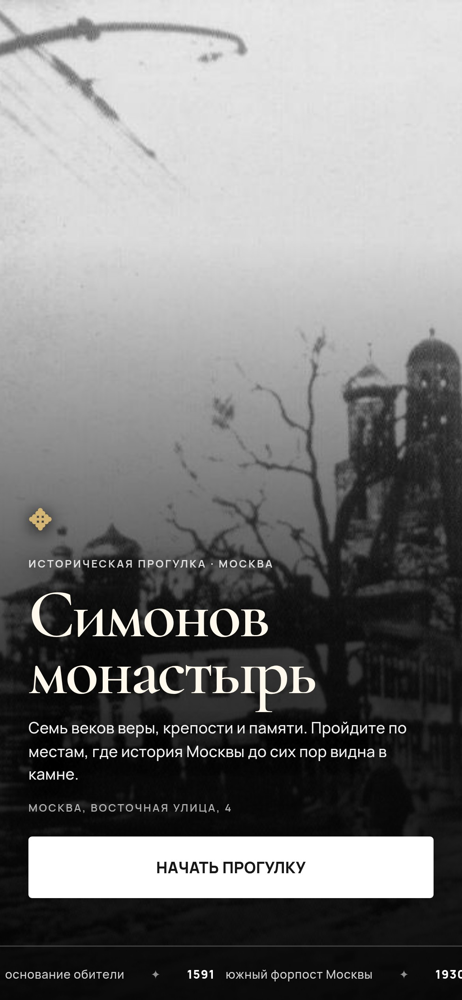
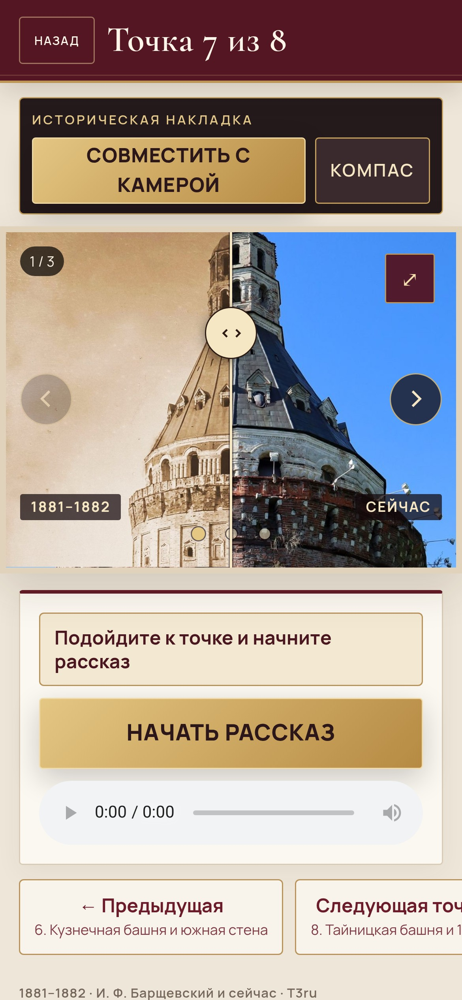
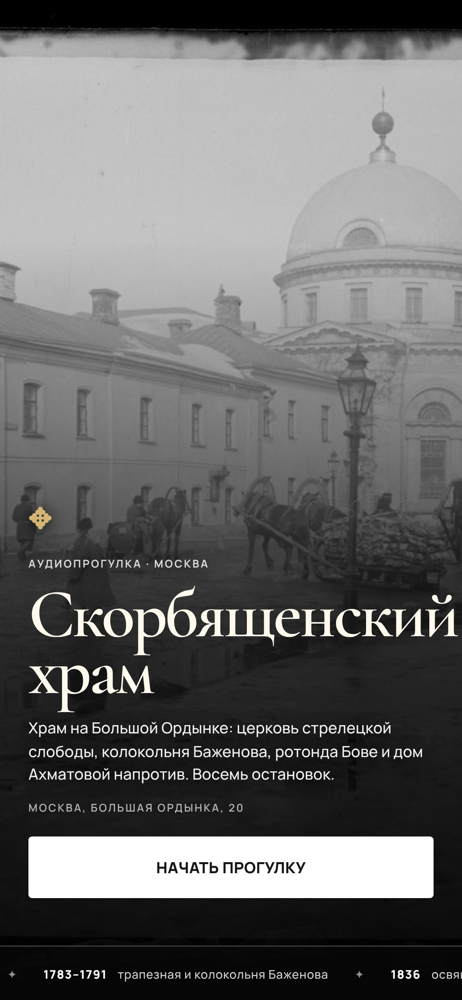
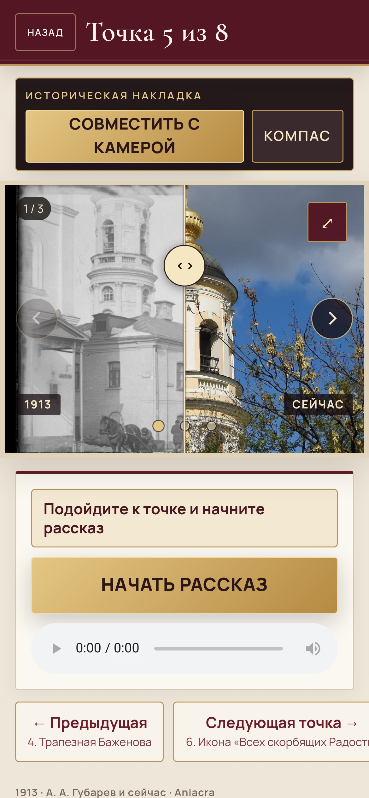
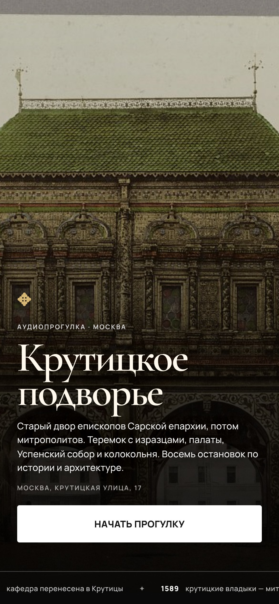
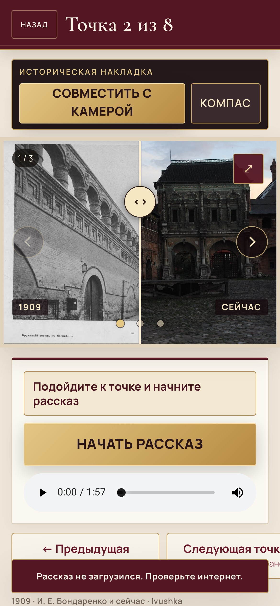

Мобильные приложения, которые проводят гостя по храму и обители: ведут по карте, рассказывают голосом диктора и показывают, как это место выглядело раньше.


Семь веков веры, крепости и памяти: от основания обители до башен, колокольни и Успенского собора.
Открыть прогулку → vlk2017.github.io/simonov-excursion

Церковь стрелецкой слободы, колокольня Баженова, ротонда Бове и дом Ахматовой напротив.
Открыть прогулку → vlk2017.github.io/simonov-excursion/ordynka

Старый двор епископов и митрополитов: теремок с изразцами, Святые ворота, палаты и Успенский собор.
Открыть прогулку → vlk2017.github.io/simonov-excursion/krutitsyНам очень важно ваше мнение: хотели бы вы, чтобы такая прогулка проводила гостей по вашему храму?